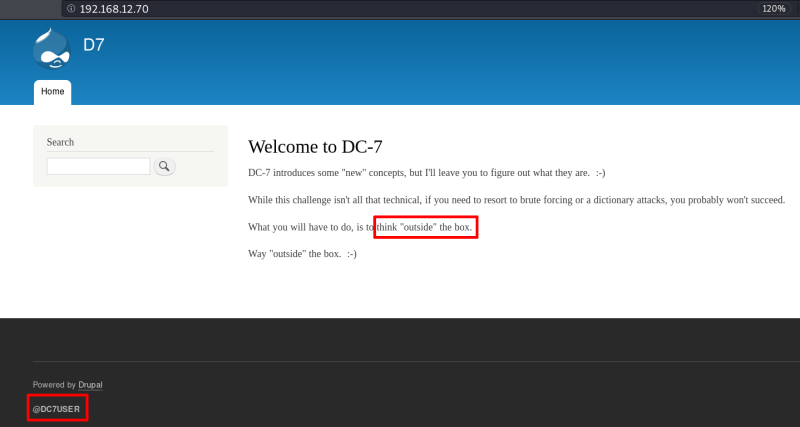
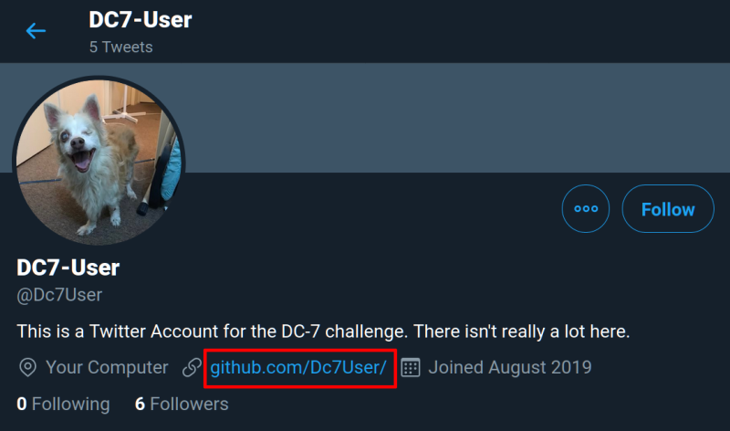
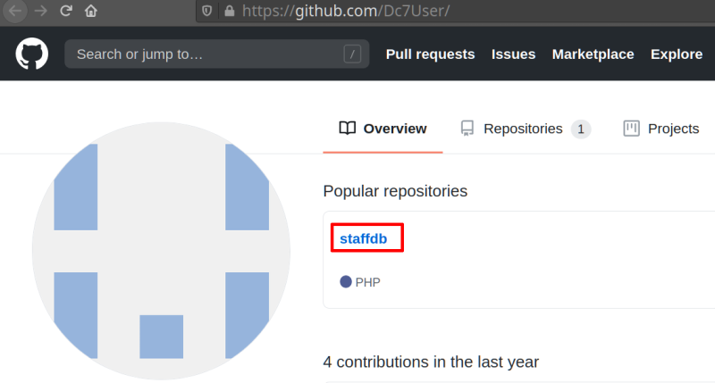
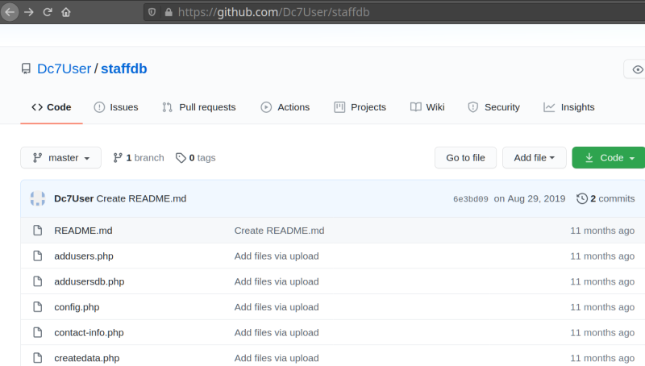
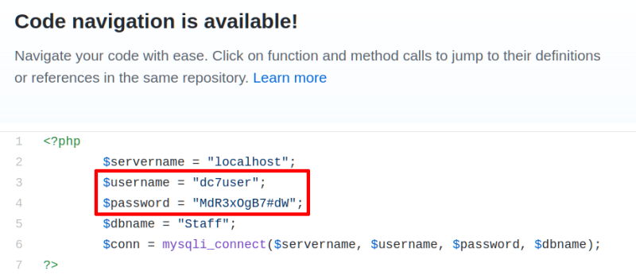

3. Enumerate
Let's see what there is on port 80.
a) Open a browser and go to http://192.168.12.70.

We've found two hints:
1. Thing ‘outside’ the box.
2. @DC7USER.
b) The second hint says it's a Twitter account. Let's find out.

There's a link to “github” site.
c) Go to “github” site.

There's a repository called “staffdb”.
d) Enter in that repository.

e) Click on “config.php” file.

We've already have “dc7user” credencials.
Username = "dc7user"
Password = "MdR3xOgB7#dW"
 Index
Index